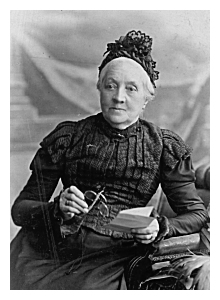

I have tended to attribute the decision to move to the poor air quality in West Ham, caused by the gigantic gasworks in nearby Beckton. It seems likely that the decision to move was made following the death of John Handley in 1898. Martha Handley, widow of John Handley and mother of Walter John (senior), also moved to Chadwell Heath and lived in the home of Sarah Ann Handley. The census of 1901 shows that there were a total of nine people in that household. Martha was then aged 76. A photograph of Martha Handley, probably taken in Stratford, has been discovered and is displayed herewith. She is shown holding a lorgnette on a little chain. She was born in 1824 and died in 1908 aged 84 years. Recently I learned that Walter John (senior) died in a lunatic asylum in Billericay, Essex (a few miles from Chadwell Heath) in 1901 aged 49 years. It seems likely that his mental health had been deteriorating for several years prior to his death. He may long have ceased to function effectively as head of the family and principal breadwinner. This may have been an important factor in the decision to move. To the Handley family, I believe, the solution to their various problems seemed to lie in the railway line that extended eastward out of London.
|